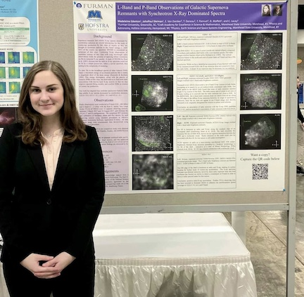

INTERESTS
The birth, evolution, and eventual fate of the universe is a topic that has fascinated me for years. The many unknowns form a sort of puzzle and fuel a strong desire to learn and answer such important questions. Cosmology is the field that captures my curiosity the most, and I hope to combine my backgrounds in physics, math, and data analytics to learn more about our universe.
My specific interests within cosmology are vast. In particular, however, I am interested in radio astronomy, galaxy evolution, transients, cosmic dawn, and simulations. My interest in both radio astronomy and transients have combined, and I now seek to observe and understand fast radio bursts. I am primarily interested in observational cosmology but I am also curious to explore the theory component of these topics, lending itself to an interest in running simulations, processing big data, and developing new methodologies to probe the early universe.
PAST AND CURRENT RESEARCH
I have done research in areas of radio astronomy, supernovae and supernova remnants, cosmic topology, and quantum computing. To see further resources on specific projects, click the title of the project or feel free to reach out with questions. My astronomy research can be accessed here.
SUPERNOVA REMNANTS AT RADIO
Supernova remnants (SNRs) that exhibit X-ray spectra dominated by synchrotron radiation are crucial laboratories for the study of cosmic-ray acceleration by this class of sources. However, despite the discovery of synchrotron X-ray emission from the archetypal source SN 1006 over two decades ago, the number of Galactic SNRs of this class remains small. Combining X-ray observations of candidate members of this class with long wavelength radio observations holds the promise of applying robust constraints on fits to extracted X-ray spectra. Such fits can provide estimates of the maximum energies of cosmic-ray electrons accelerated by these sources and thus investigate the association between SNRs and the knee energy of the cosmic-ray spectrum. Working with Dr. David Moffett at Furman University, we extracted X-ray spectra for several sources using archival observations made by Chandra, Suzaku, and XMM-Newton, and applied synchrotron models to these spectra using constraints; namely, derived flux densities and spectral indices obtained from the L-Band and P-Band observations. We have also analyzed the long wavelength radio properties of known SNRs, specifically 3C 391, Kes 69, and W41, that were serendipitously detected by these radio observations. Studies of the remnant of SN1006 have shown that its energy spectrum from radio to X-ray could be extrapolated to cosmic-ray energies (Dyer et al. 2001) – thus identifying SNRs as candidate sources of cosmic rays. To date, fits to the spectra of many other Galactic SNRs imply a maximum energy that is nearly a magnitude short of cosmic-ray energies (Reynolds & Keohane 1999). Development of theoretical models of shock acceleration mechanisms to explain this discrepancy rely on X-ray and radio observations to determine the physical conditions that can enhance relativistic shock acceleration.
COSMIC TOPOLOGY
Cosmologists seek to study the universe regarding its origin, structure, and evolution. At the core of these three characteristics lies the shape of the universe, a fundamental question which has not yet been answered. The topology of the universe is of great physical, mathematical, and cosmological significance, as it influences its numerous local and global properties and behaviors. In past studies of the universe, many topological models have been proposed and it is the case that many still undergo consideration and adjustments to new data and discoveries. Models struggle to agree with different types of cosmological data. In this research, we examined several proposed models and analyzed their nature to better understand how an accurate model of the universe should behave based on observable data and visualizations. The uniformity that cosmologists detect in the observable universe indicates constant curvature, leaving three distinct possibilities: flat (Euclidean), positive (spherical), or negative (hyperbolic) curvature. A major consequence of curvature is expansion. The universe is expanding, the speed of which is described by the Hubble constant. Expansion is determined by the amount of mass in the system, which is directly influenced by curvature. In a flat universe, the mass contained is just enough to allow expansion to continue indefinitely, with the rate approaching zero as time goes to infinity. In a positively-curved universe, there is too much mass and expansion will eventually stop before changing direction, sending the universe into a period of contraction. In a negatively-curved universe, there is too little mass and expansion continues indefinitely at a constant rate. I focused primarily on Euclidean, orientable 3-manifold models of the universe, working under Dr. Jordan Bounds at Furman University.
ERIRA
In August 2019, I participated in the Educational Research in Radio Astronomy program held at the Green Bank Observatory in Green Bank, West Virginia and run by Dr. Dan Reichart of UNC Chapel Hill. Within the program, I was a member of four projects, summarized briefly: imaging and modeling the rebrightening behavior of Cassiopeia A using linear regression, measuring the rotation speed of the Milky Way using Doppler shift and creating a spectral plot of the Milky Way, imaging and measuring radio flux and polarization for the Orion Nebula, Barnard's Loop, and the North Polar Spur, and observing four pulsars to determine their periods.
QUANTUM COMPUTING
I spent the summer of 2021 working with the Computer Science department at Furman University under Dr. Paula Gabbert on quantum computing. I implemented code and built quantum gates in Qiskit, running quantum code on two quantum simulators and three quantum computers. I then spent several weeks learning algorithms using for quantum natural language processing. I ran several of these models and analyzed the Big O notation for time and space complexity for each model.